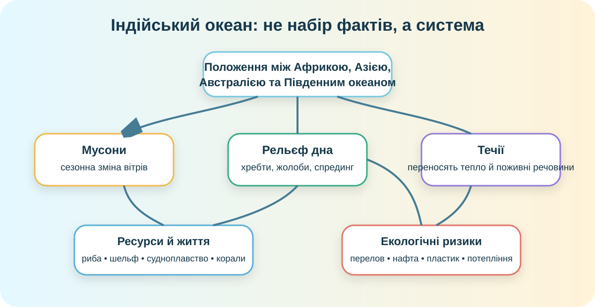

Гіпотеза до теорії
Оберіть найімовірніше пояснення сезонності північної частини Індійського океану.
Карта: океан, майже «замкнений» на півночі
OpenStreetMap. Знайдіть Африку, Азію, Австралію, Аравійське море, Бенгальську затоку, Червоне море та Мадагаскар.
А. Які материки обмежують Індійський океан із заходу, півночі та сходу?
Б. Чому північ океану сильніше реагує на сезонні зміни атмосфери, ніж його південна частина?
Міні-розрахунок. Відстань уздовж 10° пд. ш. від приблизно 40° сх. д. до 120° сх. д. становить близько 80° довготи. Якщо 1° довготи на цій широті ≈ 109 км, оцініть ширину океану.
Мусон: коли атмосфера «перемикає напрям»

Улітку материк Азія прогрівається швидше, ніж океан. Над суходолом формується область нижчого тиску, і вологе повітря надходить з океану. Взимку контраст змінюється.
Завдання: складіть причинний ланцюжок із 4 кроків для літнього мусону.
«Мусон = дощ» — занадто просте пояснення
Мусон — це передусім сезонна перебудова великомасштабної циркуляції вітрів. Дощі — наслідок, а не саме визначення. Інакше будь-яка злива автоматично ставала б мусоном, що було б географічною магією сумнівної якості.
Дно океану теж рухається

Центрально-Індійський та інші серединно-океанічні хребти пов’язані зі спредингом. Біля Індонезії, навпаки, діють зони субдукції.
Спрединг
Поясніть: чому в зоні розходження плит утворюється нова океанічна кора?
Субдукція
Поясніть: чому біля Зондського жолоба можливі сильні землетруси й цунамі?
Життя, ресурси й ризики

Фітопланктон реагує на освітленість, температуру та надходження поживних речовин. Це основа багатьох океанічних харчових ланцюгів.
Завдання: поясніть, чому багаті біоресурси можуть одночасно створювати ризик перелова. Додайте один спосіб контролю.
Екологічний кейс: нафтоперевезення через Ормузьку протоку, інтенсивне судноплавство, пластик і потепління океану. Оберіть один ризик і запишіть: джерело → наслідок → кого/що зачіпає → як зменшити.
Перевірка образу океану
Подивіться короткий фрагмент і випишіть два факти, які підтверджують або спростовують Вашу стартову гіпотезу.
Дайте відповідь як дослідник
Питання: що робить природу Індійського океану особливою порівняно з іншими океанами?
Тепер збираємо систему
Індійський океан — третій за площею океан Землі. Його північна частина різко відрізняється від інших океанів тим, що майже замкнена великим масивом Азії. Це сприяє розвитку мусонної циркуляції, яка сезонно змінює напрям вітрів, опадів і частини поверхневих течій.
Дно океану перетинають серединно-океанічні хребти — зони утворення нової океанічної кори. На північному сході біля Індонезії є активні зони субдукції та глибоководні жолоби. Поєднання теплих тропічних вод, апвелінгу, сезонної циркуляції та великих шельфових районів формує багаті біологічні й мінеральні ресурси, але інтенсивне рибальство, судноплавство, видобування нафти й зміна клімату посилюють екологічний тиск.
Мініпаспорт Індійського океану
Опрацюйте §65, с. 263–266. Створіть 6-рядковий паспорт: положення; 3 моря/затоки; 1 хребет або жолоб; механізм мусону; 2 ресурси; 1 екологічна проблема з рішенням.